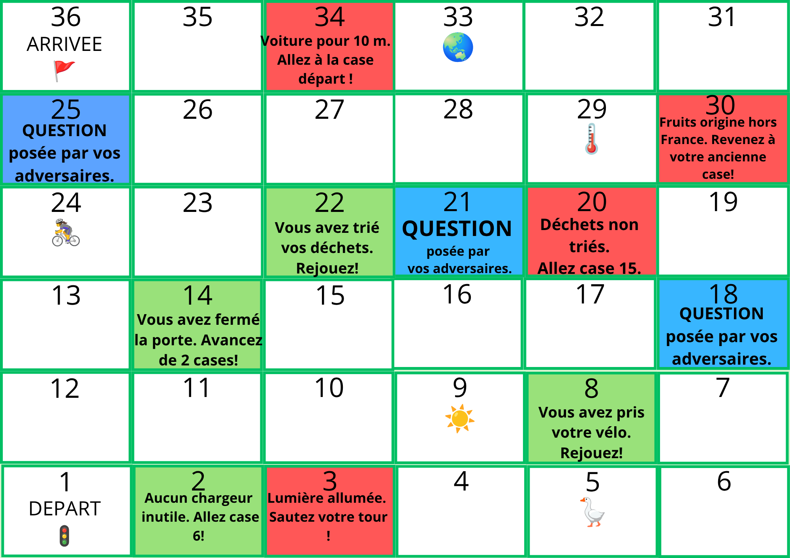

Un défi chaque semaine
Répondre correctement au maximum de questions, avant que le glaçon ne fonde entièrement.
Quand tous les glaçons ont fondu, c’est la fin de la partie.
Réutilisez l’eau fondue pour refaire des glaçons, et rejouez !
Être le premier à arriver à la dernière case du plateau !
La partie se termine quand un joueur atteint la dernière case : c'est lui le gagnant !
Pas le temps de fabriquer le plateau ? Utilisez le plateau prêt à jouer préparé par ECODEFI !

href="plateau.png"